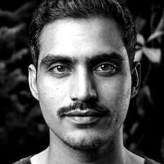
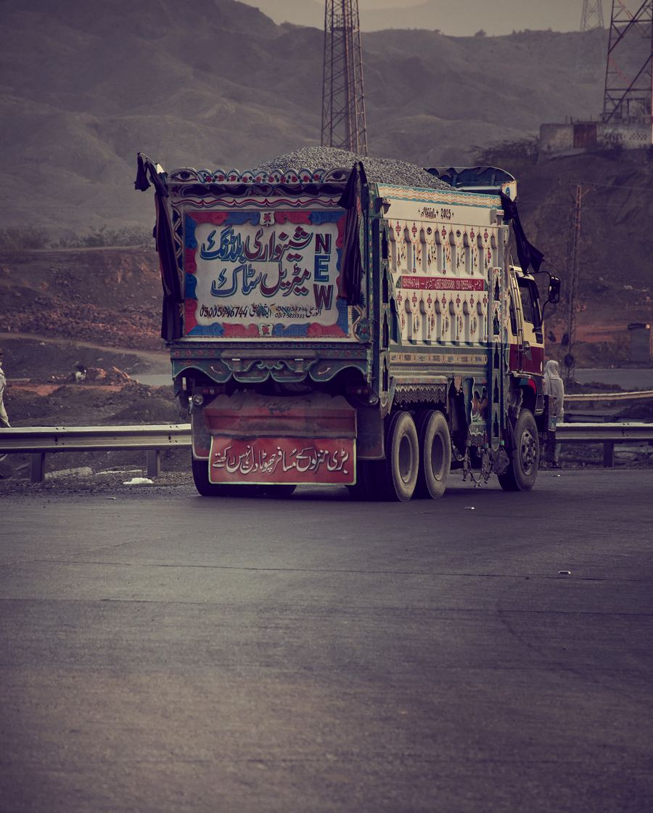

Creative technology studio
Attention is the hardest
thing to earn.
Film, design and software from an independent studio
in Lahore and Paris, since 2019.
07
years in production, from Peshawar 2019 to Lahore and Paris today
01/04
Manzar means the scene, the view you can’t look away from. We started in 2019 with one editor and a camera, and grew into a studio that does two things properly: creative production and software. Today we make films, brands, websites and platforms from Lahore and Paris. The medium changes, the standard doesn’t: if it doesn’t hold the eye, it doesn’t ship.

Uzair Ahmed
Founder & Creative Director, Manzar
Brands we’ve worked with
Cameras, campaigns and code for camera makers, engineering firms, wellness brands and artists across three continents.
Nikon Pakistan
NESPAK · World Bank
WASA Lahore
Vitalis Living
Halal Ribfest
Revel Realty
Cherie Lingerie
Soonlee GroupSoonlee Group
AmantechAmantech
+ independent artistsMusic videos
The point
FRAME 01/04
Every screen
a scene.
Your screens are where people decide if you’re worth their time. We make every one of them worth looking at: the site, the film, the brand, the product.
Frame 01 · The eye
Selected work
04 · Productions
Manzar Labs
The other room
The software side
of the studio.
Same taste, different instrument. Labs is our software company: AI products, enterprise platforms and connected systems. MVPs live in six weeks.
- 01AI products & chat
- 02Enterprise & ERP systems
- 03IoT & connected systems
- 04MVPs for startups, fast
Chat and copilots wired into your real data, with a human gate on anything irreversible.
Enter Manzar Labs ↗06weeks, signed scope
to a live MVP
to a live MVP
40+products shipped
and still running
and still running
99.9%uptime across the
platforms we operate
platforms we operate
What we can help with
08 · In-house
Music VideosArtist films · performance · lyric edits
Commercials & Brand FilmsTVCs · launch films · campaign cutdowns
Motion Graphics & 3DTitles · explainers · product renders
Colour & FinishingGrading · clean-up · delivery masters
Brand & Visual IdentityLogos · systems · key art
E-commerce WebsitesShopify · headless storefronts
Websites & Web AppsMarketing sites · portals · dashboards
Software, SaaS & AIPlatforms · integrations · AI tooling
The showreel is in the edit. Ask us for work samples meanwhile.
Grade · Cut · Motion
Process
03 · Steps
How we ship
Step · 01
We find the story
We dig into your brand and ask until the brief confesses: what you’re really selling, who needs to feel it, and the one metric that matters. Agreed before anyone opens an editor.
Step · 02
We shape it in the open
Every Friday you get a cut you can watch or a build you can click, never a deck about progress. The work stays visible, testable and honest the whole way through.
Step · 03
We ship it, then stay
Launch, measure, harden. We stay through the first real users and the first real campaigns. The release is the opening scene, not the credits.
FAQ
A few honest answers before you decide to reach out.
Who will actually be working on our project?
Uzair leads every project from strategy to final delivery, with our senior engineers on the build and our own crew on camera and post. The people you meet on the first call are the people doing the work. No account managers, no handoffs.
Can you really handle video, design and software?
Yes. We grew up in a production house and learned software by shipping it. The person grading your film sits next to the person building your site, so nothing gets lost between three different vendors. One room, one standard.
We need software, not a film. What can you actually build?
That’s Manzar Labs, our software company: AI products and chat, enterprise and ERP systems, IoT platforms. MVPs go live in about six weeks, and regulated builds carry HIPAA, PCI and SOC 2 controls from week one. See Manzar Labs ↗
What does working together look like?
We lock scope and the one metric that matters, then work in weekly cuts: something you can watch or click every Friday. Decisions happen on calls, everything else moves async. After launch we stay through the first real users.
How long does a project take?
A campaign edit can turn around in days. A full website usually runs three to six weeks. A software MVP through Manzar Labs is typically six weeks from signed scope to a product real users can log into, with a build you can open every Friday from week two. We set dates on day one and keep them.
What do you need from us to start?
One honest conversation about what you’re building and why now. From there you get a written scope, a price and a start date, usually within days. Onboarding is deliberately light so the work starts fast.
What does it cost?
Every project is quoted fixed, so you know the number before we start. A music video edit and a SaaS platform are different animals, so we price the work, not the hours. Retainers are there for teams that want us around.
The studio
Lahore · Paris
One senior team for film, design and software. Hire a studio, not three vendors.
Manzar Studio for creative production, Manzar Labs for software, Manzar Films for cinema from 2027. Three rooms, one door, so your film, your brand and your product stop being made by people who never speak.
01Everything under one roof
The person grading your film sits next to the person building your site. Every piece looks like one brand because it is one team.
02Senior hands only
Founder-led throughout. The people on the first call are the people doing the work.
03Weekly cuts, not decks
Every Friday, something you can watch or click. You judge progress with your own eyes.
04Yours to keep
Your repo, your accounts, your keys, documented like we might leave tomorrow, built so you never want us to.
Call sheet · Engagement 01
Sheet 1 of 1
C/01Direction
Strategy, story, deliveryLahore / Paris
C/02Engineering
Cloud, product, AILahore
C/03Production
Camera, grade, postLahore / Paris
- Call time
- 48 hours from brief
- Location
- Remote · your timezone
- Delivery
- Written report + 45-min walkthrough
- Rate
- No charge
Not included: implementation and retainers, quoted only after you’ve seen the report. Founder-led throughout, so the people on the first call are the people doing the work.

Lahore
--:--:--
GMT+5
Paris
--:--:--
GMT+2
Let’s build
something
worth → seeing
Replies within 24 hours
Lahore / Paris
Tell us your story ↗